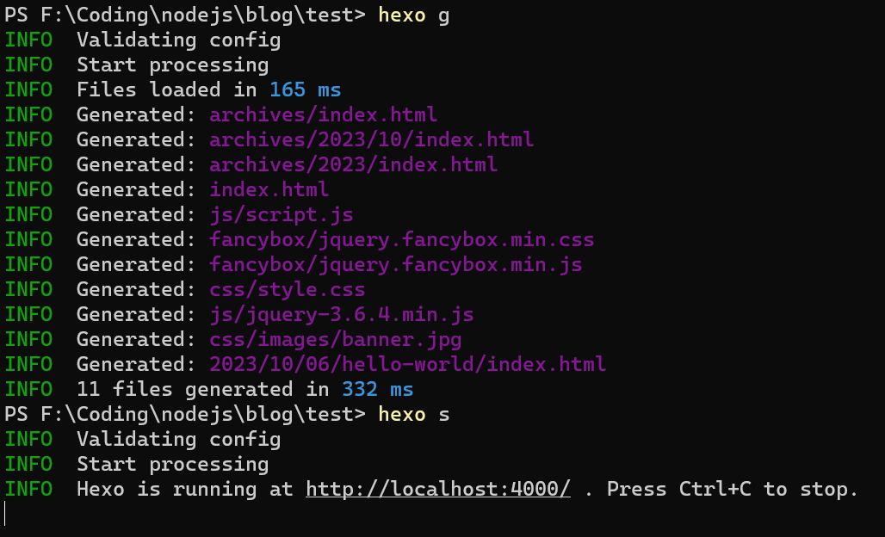
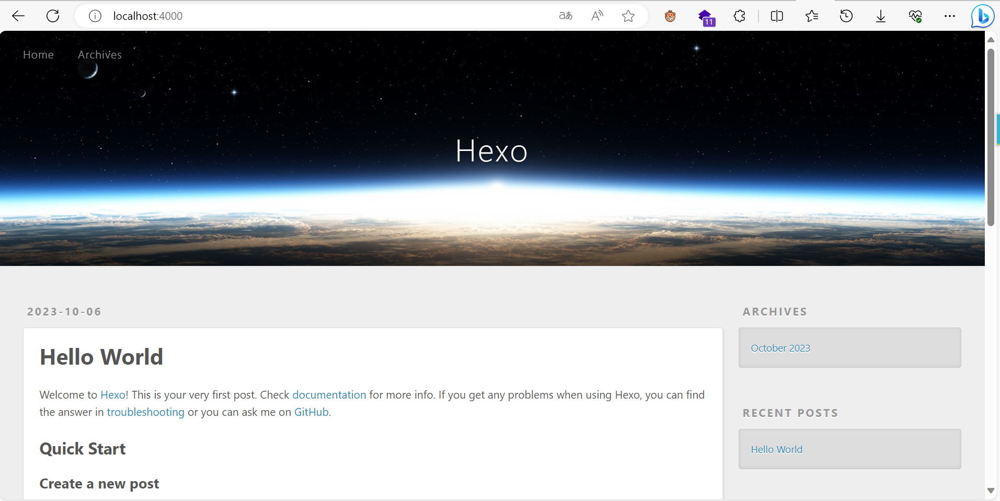
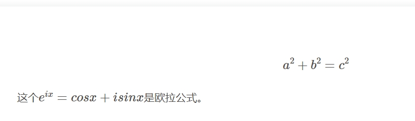
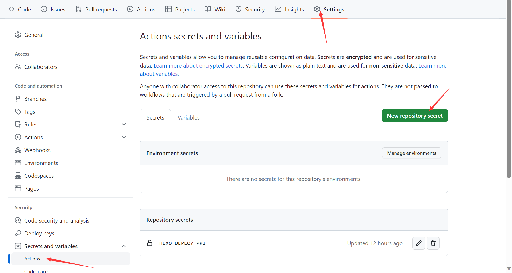
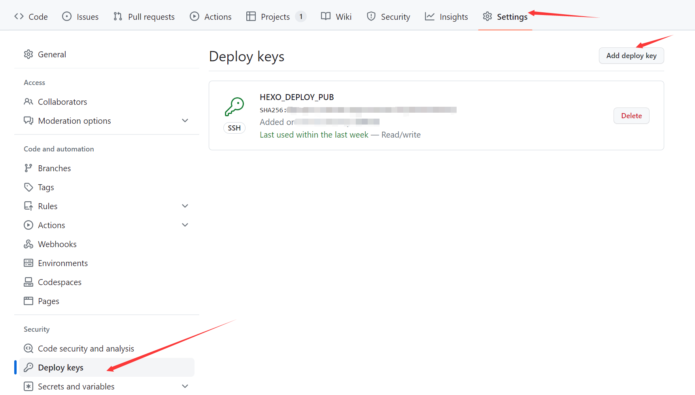
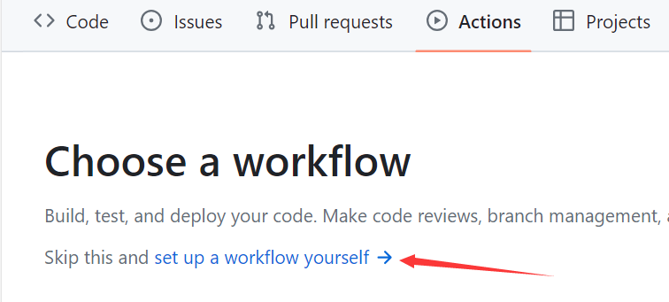
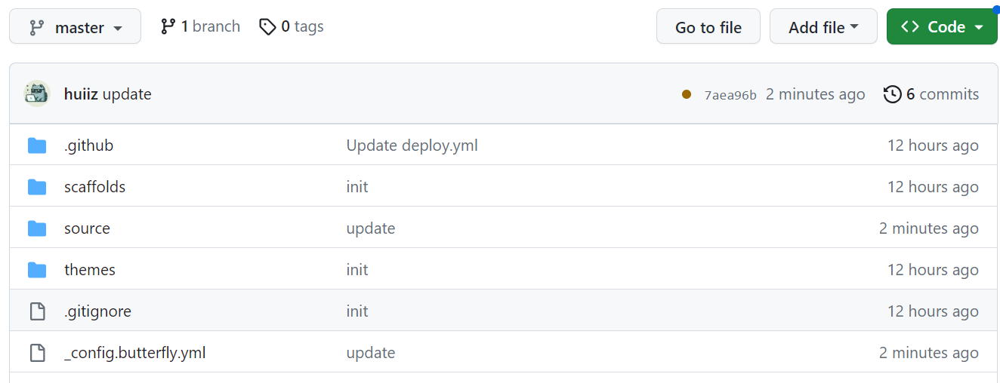
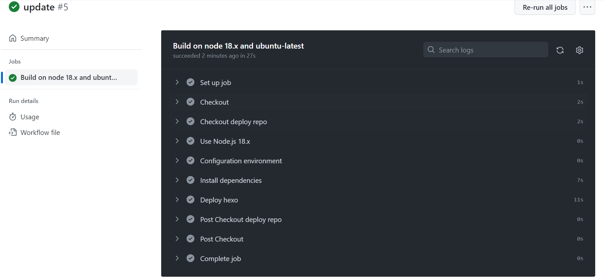
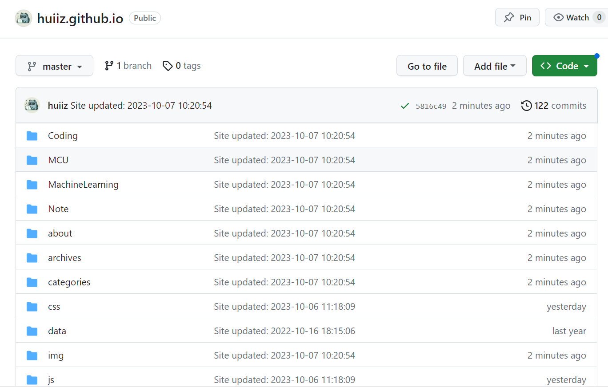
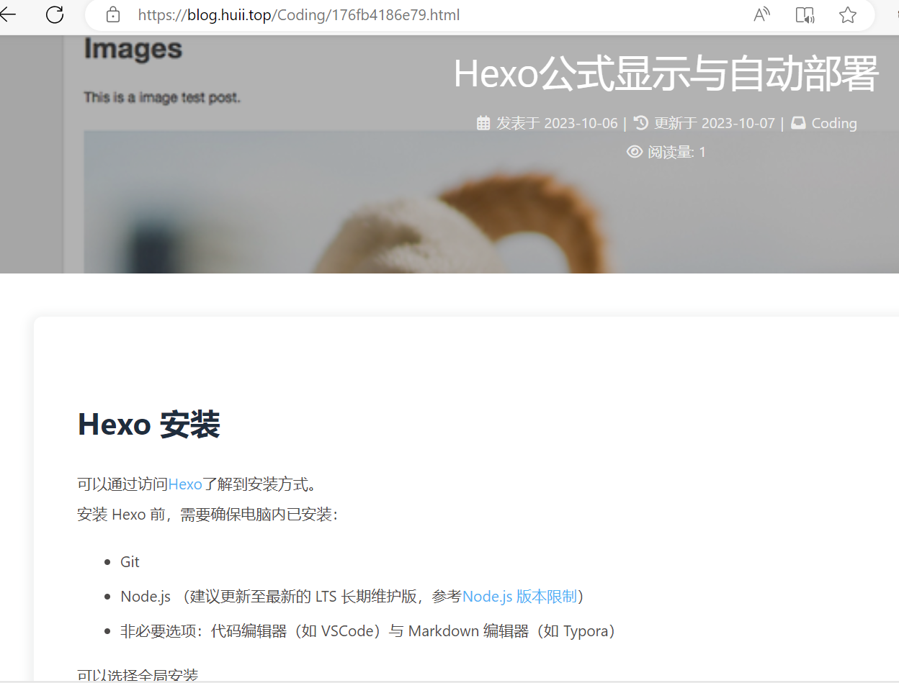

Hexo公式显示与自动部署
Hexo 安装
可以通过访问Hexo了解到安装方式。
安装 Hexo 前，需要确保电脑内已安装：
- Git
- Node.js （建议更新至最新的 LTS 长期维护版，参考Node.js 版本限制）
- 非必要选项：代码编辑器（如 VSCode）与 Markdown 编辑器（如 Typora）
可以选择全局安装
1 | npm install -g hexo-cli |
或局部安装
1 | npm install hexo |
可以通过hexo -v命令查看安装 hexo 版本，验证是否已安装成功。
初始化项目
选择一个合适的地方
1 | hexo init <folder> |
其中<folder>是要建立的项目名。
核心目录如下：
.
├── _config.yml
├── package.json
├── scaffolds
├── source
| ├── _drafts
| └── _posts
└── themes
常用命令有
1 | hexo clean # 清除生成的缓存 |
具体使用可以参考网上其他教程。以下是生成与运行效果。


Github Page配置
首先需要在你的GitHub上创建一个名为username.github.io的仓库，其中username为你的GotHub用户名。
需要安装hexo-deployer-git
1 | npm install hexo-deployer-git --save |
打开 _config.yml 并修改
1 | # Deployment |
涉及github相关的登录等步骤请自行摸索或搜索网上资料。
主题选择
推荐一款名为Butterfly 的主题。
GitHub地址：jerryc127/hexo-theme-butterfly: 🦋 A Hexo Theme: Butterfly (github.com)
官网：Butterfly - A Simple and Card UI Design theme for Hexo
安装
进入项目根目录，我们会发现有一个themes的文件夹。如果有修改需求的话，可以选择将主题下载到这。我们这里选择直接使用npm进行安装。
1 | npm install hexo-theme-butterfly |
应用主题
修改 Hexo 根目录下的 _config.yml，把主题改为 butterfly
1 | theme: butterfly |
安装插件
如果你没有 pug 以及 stylus 的渲染器，请下载安装：
1 | npm install hexo-renderer-pug hexo-renderer-stylus --save |
配置
将node_modules/hexo-theme-butterfly目录下的 _config.yml文件内容，复制到根目录下的_config.butterfly.yml中（需自行创建）。
数学公式配置
官方文档Butterfly 安裝文檔(四) 主題配置-2 | Butterfly中推荐的是KaTeX插件，但是经过我的测试，MathJax的效果更佳。
修改主题配置文件
1 | mathjax: |
官方文档中给的per_page是false，但是如果公式使用较多的话，建议改为true。
安装插件
在根目录执行
1 | npm uninstall hexo-renderer-marked --save |
修改项目配置文件
修改项目根目录_config.yml文件，在最后新增
1 | kramed: |
效果
当输入以下内容
1 | $$ |
得到结果

GitHub Actions自动部署
为保护代码安全，将blog源代码与生成的html文件存放在不同的仓库。
具体步骤可参考使用Github Actions自动部署Hexo博客_github action hexo_Yetta Daisy的博客-CSDN博客
代码上传到github
另外新建一个仓库，可以将仓库设置为private，将代码文件同步到仓库。
本地根目录运行
1 | ssh-keygen -f github-deploy-key |
当前目录下会有 github-deploy-key 和 github-deploy-key.pub 两个文件。
GitHub 密钥配置
复制 github-deploy-key 文件内容，在 blog 仓库 Settings ->Actions secrets and variables -> Actions 页面上添加。
在 Name 输入框填写 HEXO_DEPLOY_PRI。
在 Value 输入框填写 github-deploy-key 文件内容。

注意：接下来前往你的GitHub Page的仓库！！
复制 github-deploy-key.pub 文件内容，在 your.github.io 仓库 Settings -> Deploy keys -> Add deploy key 页面上添加。
在 Title 输入框填写 HEXO_DEPLOY_PUB。
在 Key 输入框填写 github-deploy-key.pub 文件内容。
勾选 Allow write access 选项。

GitHub Actions配置
选择Actions，新建一个workflow。

新建deploy.yml，内容可参考：
1 | name: CI |
结果
部署完成后，即可自动运行部署。
每当GitHub仓库有更新，blog静态页面也会自动更新内容。
blog代码仓库：

blog执行actions：

博客内容仓库更新：

博客内容更新：
